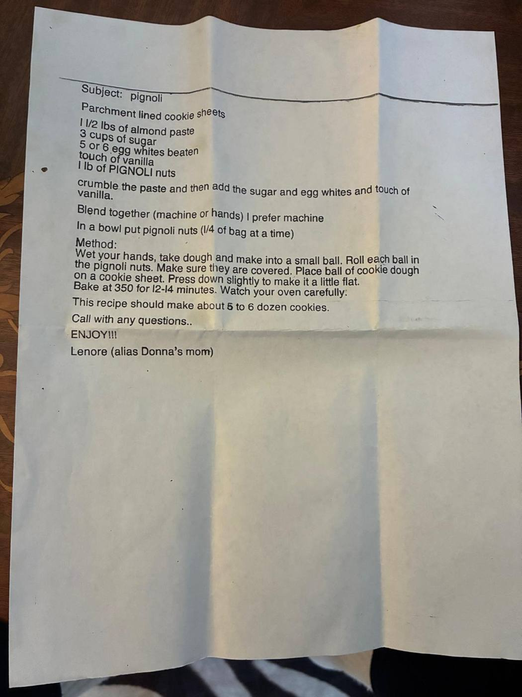

Desserts
Pignoli Cookies
From the kitchen of Mom
Oven350°F
Bake12–14 min
Makes5–6 dozen cookies

Mom's original card · tap to enlarge
Ingredients
Method tap a step to mark it done
- Line cookie sheets with parchment.
- Crumble the almond paste, then add the sugar, egg whites and a touch of vanilla.
- Blend together, by machine or by hand.
- Put the pignoli nuts in a bowl, about a quarter of the bag at a time.
- Wet your hands, roll the dough into small balls and roll each ball in the nuts until covered.
- Place on the cookie sheet and press down slightly to flatten a little.
- Bake at 350°F for 12–14 minutes. Watch your oven carefully.
Mom’s tips
- I prefer the machine for blending.